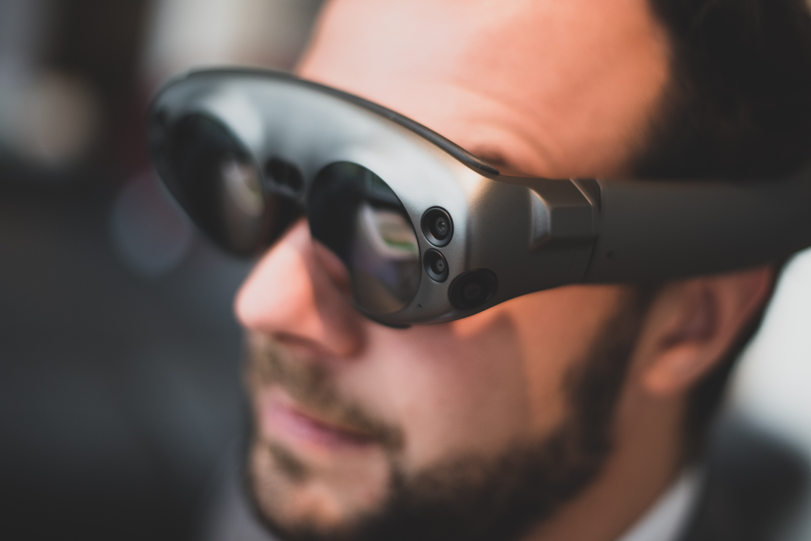

Virtual reality (VR) is an interactive computer-generated experience taking place within a simulated environment. It incorporates auditory and visual feedback. This immersive environment can be similar to the real world or it can be fantastical.
Augmented reality (AR) is a similar experience, where simulated objects and environments are interwoven in the tangible world. AR headsets can project high-resolution images onto transparent displays, creating holograms that you can interact with. This technology has made leaps and bounds in tracking, picture quality, and computing power in the past year alone and will only get better.
While VR gaming has yet to break the sales required to make the technology accessible, AR technology is already being used in the corporate workforce to revolutionize productivity. The artistic capability of this technology seems to have been sidelined, and it is the primary goal of Portraits of Change to use this technology and other new and exciting innovations to transform how musicians create music and how audiences listen to it.
With AR technology, we can track instruments and music in real time, and have animations and effects permeate around the sound. When the trumpet is blaring a high note, fire can release from the bell. Sparks fly off of the piano, more energetic and frantic the harder the key press is. We can make trees grow around us, and form galaxies at the end of our horns. We can tell stories, we can travel back in time. The music played live will always be different, and can make a new and original AR experience with every performance. The audience can interact with the musicians in more ways than ever imagined.
AR and VR technology also revolutionize the way we practice music. In-house music tools are being developed that will become publicly available for use when they are finished.
It isn't an easy feat to undertake, but the artists behind Portraits of Change are confident that with the right tools and right people, we can create a tangible, functional, and most importantly creative product.
the Hololens 2 is currently the most advanced AR device, expected to release late 2019. This technology is not a distant possibility, but a certain reality.
The Unity game engine is a very powerful 3D programming environment that many popular games use. It is also what most Virtual Reality applications use to power the 3D virtual world. Portraits of Change is powered by Unity. By sending MIDI input and other digital sound through Unity, we are able to create virtual environments that morph, react, and are created through live music.
The Oculus Rift was the first breakthrough in XR technology. We are currently developing prototypes on this headset as we raise funds for Hololens development. While not able to see the real world, we can test and demo our musical environments on Unity with high fidelity. The project will port onto whatever AR headset we decide to use.
We are currently planning to develop with Microsoft’s next generation of mixed reality, the Hololens 2. With the largest FOV of any AR headset, 2k resolution in each eye, and cloud rendering capabilities, the Hololens 2 is redefining what is possible in XR technology. While these headsets are not marketed towards consumers, we are aiming to develop and show previews on these headsets in anticipation for a consumer product down the line.
By using Azure Spatial Anchors to create fixed digital “coordinates”, our application can share a spatial anchor across multiple HoloLens, iOS and Android devices. By having each device render a hologram using the same spatial anchor, all users will see the hologram appear at the same place in the real world. This allows for real-time shared experiences.
This camera contains the same depth-sensors as the Hololens 2. We will use these cameras for greater tracking on-stage, that will increase the fidelity of the live 3D environment. Every drum hit, every valve press, and every string plucked will be tracked and recreated into a malleable, virtual canvas.
Microsoft’s new Azure Remote Rendering brings incredibly detailed 3D models without any decimation or sacrifice on visual quality. Remote Rendering renders high-polygon content on HoloLens 2, mobile phones and tablets, and other untethered devices.